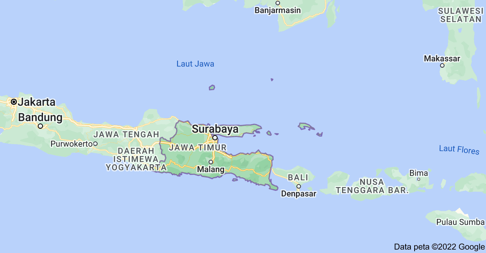
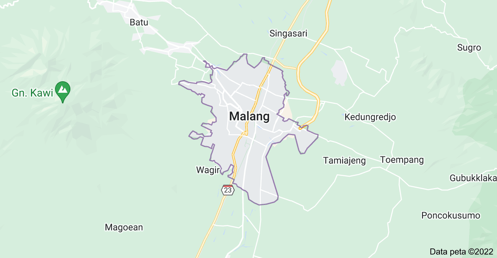

Malang is a city in the Indonesian province of East Java. It
has a history dating back to the age of Singhasari Kingdom. It
is the second most populous city in the province, with a
population of 820,043 at the 2010 Census and 843,810 at the
2020 Census. Its surrounding (the metropolitan area) is home
to 3,663,691 inhabitants in 2010, spread across two cities and
22 districts (21 in Malang Regency and one in Pasuruan
Regency). Malang is the third largest city by economy in East
Java, after Surabaya and Kediri, with an estimated 2016 GDP at
Rp. 44.30 trillion.
The city is well known for its mild climate. During Dutch
colonization, it was a popular destination for European
residents. Even now, Malang still holds its position as a
popular destination for international tourists. Malang keeps
various historical relics. This city keeps relics of the
Kingdom of Kanjuruhan period until the Dutch period. The
existence of Dutch heritage in general is in the form of
ancient buildings such as the Kayutangan church and Ijen
cathedral which has gothic architecture. Malang also holds
various events to preserve its cultural heritage, one of them
is Malang Tempo Doeloe Festival. There's also a lot of
historical heritage which has become a landmark like Tugu
Malang (Alun-alun Bundar). This city is also well known
because of its label as an educational city. It has one of the
best universities in Indonesia such as Brawijaya University
and Malang State University.
Malang has various ethnic groups and cultures from all over
Indonesia and the world. The population of Malang reaches
895,387 people with a majority of Javanese, followed by the
Madurese, and Chinese or Peranakan. Malang extended urban area
or notable known as Malang Raya, is the second largest in East
Java after Gerbangkertosusila (Surabaya Metropolitan Area).
From Javanese culture point of view, the majority of Malang
people belongs to Arekan Javanese culture.
Malang is located at the South of East Java Province
 
The etymology of the name Malang is uncertain. One of the
theory said that the name Malang is derived from the words
Malangkuçeçwara which means "God has destroyed the false and
enforced the right". The words was taken from an ancient term
which mention a legendary temple called Malangkuçeçwara
supposedly located near the city Malang. The word
Malangkuçeçwara was applied as the motto of the city of
Malang. The name "Malang" first appeared on the Pamotoh /
Ukirnegara Inscription (1120 Saka / 1198 AD) which was
discovered on 11 January 1975 by a Bantaran plantation
administrator in Wlingi, Blitar Regency. In the copper
inscription, one part is written (with the following
translation) as follows.
...taning sakrid Malang-akalihan wacid lawan macu pasabhanira
dyah Limpa Makanagran I...
... in the east where hunting around Malang with wacid and the
mancu, Dyah Limpa rice fields namely ...
Malang here refers to an eastern of Mount Kawi. Although it is
known that the use of Malang has at least been going on since
the 12th century, it cannot be ascertained the etymology of
its territory.
The first hypothesis refers to the name of a holy building
called Malangkuçeçwara (pronounced [malaŋkuʃeʃworo]). The
sacred building is referred to in two Balitung King
inscriptions from Ancient Mataram, namely the Mantyasih
Inscription in 907 AD and the Inscription of 908 AD. Experts
still have not obtained an agreement where the building is
located. On the one hand, there are a number of experts who
say that the Malangkuçeçwara building is located in the Mount
Buring area, a mountain that stretches east of Malang where
there is one of its peaks named "Malang". Others on the other
hand suspect that the actual location of the sacred building
is in the Tumpang area, Malang Regency. In the area, there is
a village called Malangsuka, which according to historians
comes from the word Malangkuça (pronounced [malankuʃoː]) which
is pronounced upside down. This opinion is reinforced by the
existence of ancient relics around Tumpang such as Jago Temple
and Kidal Temple which is the territory of the Kingdom of
Singhasari.
The Malangkuçeçwara name consists of 3 words, namely mala
which means falsehood, cheating, falsehood, and evil, angkuça
(pronounced [aŋkuʃo] which means to destroy or destroy, and
içwara (pronounced [iʃworo]) which means God. Therefore,
Malangkuçeçwara means "God has destroyed the vanity".
The second hypothesis refers to the story of the assault of
the Mataram Sultanate forces to Malang in 1614 led by
Tumenggung Alap-Alap. According to folklore, there was a
conversation between Tumenggung Alap-Alap and one of his
assistants regarding the condition of Malang before the attack
began. The assistant from Tumenggung Alap-Alap mentioned
residents and soldiers from the area as residents who "blocked
the halangi" ("Malang" in Javanese) from the arrival of
Mataram troops. After the conquest, the Mataram forces named
the area of conquest as Malang.
The Malang area in the Pleistocene era was still a deep basin
flanked by volcanic activity from mountains such as the Karst
Mountains in the South, Kawi, Butak, and Kelud in the West,
Anjasmoro, and Arjuno-Welirang complex in the Northeast and
North, and the Tengger Mountains Complex in East. The basin
has not been inhabited by humans because the condition is
still in the form of lava and hot lava flows from the
surrounding mountains. Towards the rainy season, the Malang
basin is filled with water flowing through the mountain slopes
leading to a number of rivers and forming an ancient swamp.
The swamps spread to create ancient lakes.
When the ancient lake had not dried up, early human
civilization was still in the early to advanced stages of
Hunting and Collecting Food. The settlements are still on the
slopes of mountains and mountains that surround Malang in the
form of natural caves. Therefore, it is understandable that
the discovery of artifacts in the paleolithic and mesolithic
period is found in mountainous areas, such as on the slopes of
Mount Kawi, Arjuno-Welirang, Tengger, Semeru and the Southern
Karst Mountains.
Malang ancient lake gradually dried up in the Holocene era and
caused the Malang region to become a plateau in Malang. When
it began to enter the Planting Period, early humans began to
descend from the mountains and make a number of settlements
and agricultural areas. The discovery of a number of artifacts
in the form of two square pickaxes, chalcedony stone tools and
hand-held andesite axes on the east side of Mount Kawi in the
Kacuk area around the Metro and Brantas streams reinforced
this assumption. In addition, the study estimates that the
forms of occupancy in the transitional period were in the form
of a stilt house, where the body of the house was supported by
the legs of the house and was several meters above the ground.
This is reinforced by the discovery of artifacts in the form
of "Watu Gong" or "Watu Kenong" in Dinoyo, Lowokwaru, Malang,
whose forms are similar to traditional musical instruments,
namely gong, which are actually swear or foundation of a stilt
house. The growth of settlements around the river flowing in
Malang became the forerunner of the ancient civilizations of
the Homo sapiens.